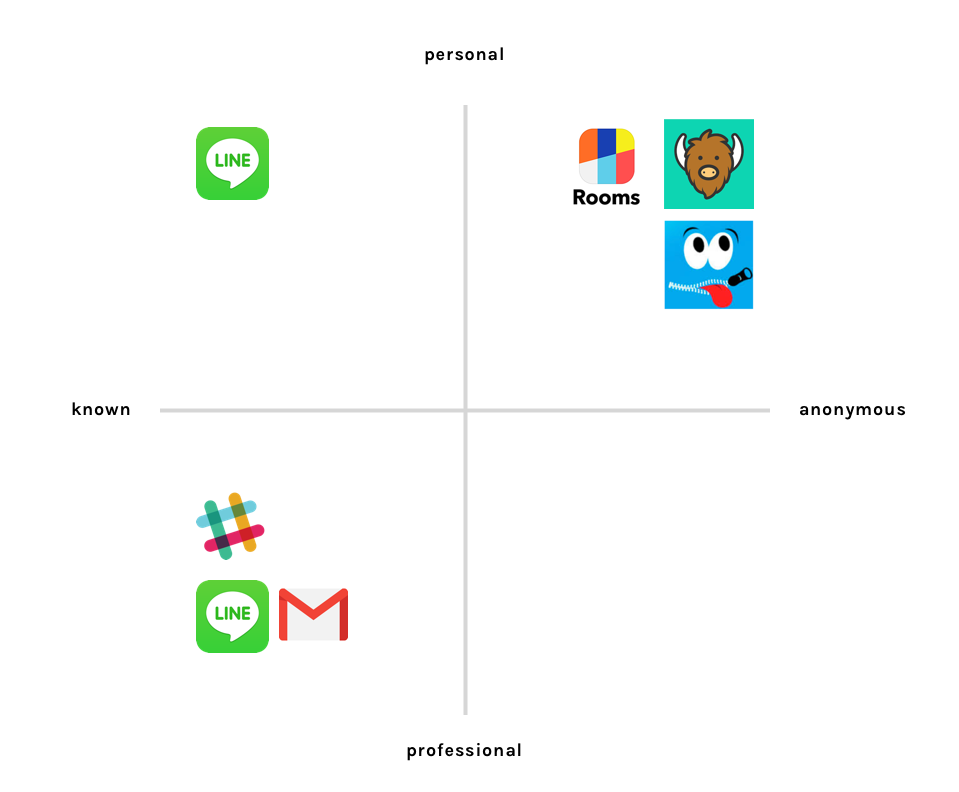
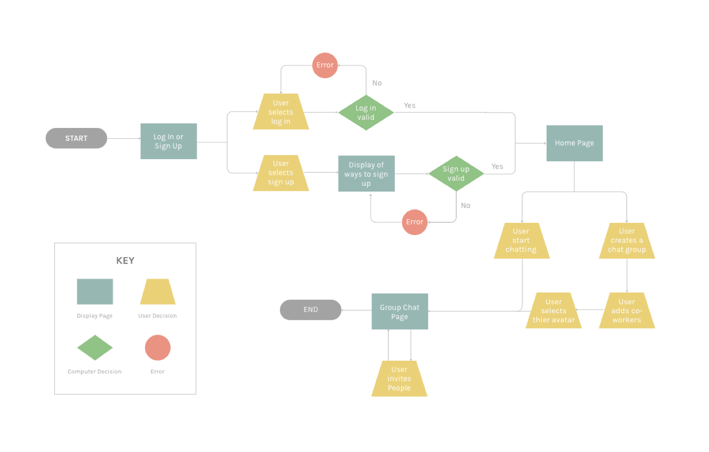
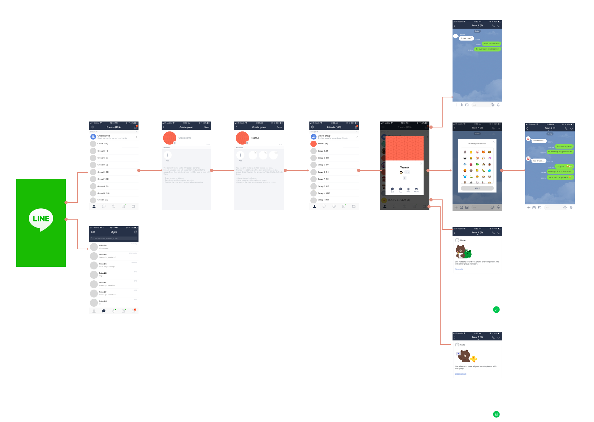

OVERVIEW
Internship project
This was my internship project where I worked with a PM and a developer to design an anonymous chat application with an aim to combat a problem of overworking in Japan. As a design intern in the team, my role was to research to identify design opportunities, envision the preferred future, and translate it into screen designs.
MOTIVATION
Japan’s work culture has been an issue and we needed to find a way to make it better

Since the highly-publicized Dentsu employee suicide, Japan's work culture is recognized to be one of the important issues that needs to be solved. While the government and some companies are trying to solve it by creating new laws, number of people with mental health issue as well as number of death caused by work was increasing every year. Thus, we were motivated to find a solution for it.
Primary RESEARCH
Understanding the problem space
In order to understand the core cause of this problem, we conducted a research in this topic deeply and from that, we discovered that the problem is heavily correlated to Japanese culture, history, tradition and mindset. Below are the main findings in this phase.
Keeping its Harmoney
Japan is a harmonious society with low rates of litigation, crime, and divorce. People value group goals more than immediate personal gain. Because of this societal expectation, people tend to hide their true feelings. This also keeps them working even though it's overtime.
Shared Responsibility
Shared Responsibility simply means that if something goes wrong, the responsibility is shared by all who were in the team. Due to this unique mindset of Japanese people, the idea of causing trouble for others keeps them working.
High Economic Growth Period in 1950s - 1970s
After the World War Two ended, Japan rapidly became the world's second largest economy. Now, those who experienced the era became seniors or managers at companies and they are inheriting the work ethic, "if you work harder and longer, you will succeed someday."
Respect Older
Not only in Japan but also in many Asian countries, It is very important to respect someone who is older. This makes younger employees difficult to go home when other employees who are older are still working.
Secondary RESEARCH
Listening to the real voice and digging into the "why"
After getting a broad understanding of this problem issue, we interviewed few people to learn about their work experience. Specifically, I asked questions around the findings from the primary research. This was for us to empathize with our potential users, make sure if these research insights are true, and figure out why it is hard for them to change the work culture.
Here are some interview insights:
- It depends on the team you are a part of, but in my team 30% of the people often stay until 8 or 9pm. I've seen someone staying almost till midnight.
- Majority of people at my company are very responsive even during weekend.
- There is a tacit understanding of working longer than co-workers who are older.
- Working in the team could be stressful because I'm worried about messing things up and bother others in my team.
- Sometimes when I have a meeting with my manager, it can be scary to speak up to him/her
During the interview, I tried to ask them "why" to their answer. For example, one of my interviewee mentioned the she usually work until 9pm. So, I asked "why do you have to work until 9pm?" She said, "because I feel like I should go home before my manager." So, I asked "why can't you go home before your manager?" She said, "he probably won't think I'm working hard enough if I go home before him." So, I asked "why does he think that way?" She said, "I don't know but he must be thinking that way!"
From asking these why questions, I noticed that there is a lack of honest communication between workers mainly due to the japan specific cultures.
Brainstorm
How might we increase honest communication?
As a team, we took some time to come up with some ideas to tackle the problem we identified. We sketched out ideas on our individual notebook, gathered as a group, and shared each of our ideas. Through this process, one idea, anonymous chat application, was determined.
Competitive Analysis
We looked into communication tools and anonymous chat applications that are currently on the market, and we discovered that there aren't any anonymous communication tool at workplace currently.
GOALS
How might we design an anonymous workplace chat platform that encourages people to communicate anonymously?
After discovering the design opportunity in the competitive analysis, we decided to use LINE as a platform because it is the most used communication app in Japan.
Product Analysis
This is what the current user flow of making a group chat look like.
Preffered User Flow & Wire Flow
Testing
We distributed our prototype to a team and asked them to use it for a day so we can see if anonymous environment is making a difference - solving the problem. At the end of the day, we compared the number of messages and immediately got confirmation that it is making a difference because there were 428 messages sent in our prototype while there were only 93 messages sent in the usual group chat. (I blurred out the messages for privacy purpose.)
Improvement
What can we do to improve?
Although I could see that Chit Chat was doing a great job, I also saw some improvements that can be made. From looking at the conversation on our prototype, I found out that the number of message increased when someone in the chat group made a joke or asked questions. However, when there aren’t any conversation starters, the chat group was inactive. This led us add two more features, chatbot & avatar.
Chatbot
To avoid the inactivity, I incorporated chatbot that sends messages when there were no activities for a certain amount of time. When the chatbot recognizes negative words, it sends messages to change the atmosphere of the conversation.
Avatar
To make the chat atmosphere more cheerful, I also decided to ask users choose their avatars (emoji).
Reflection
This is a project that I felt very passionate about while working on it because it tackles the meaningful problem of work culture in Japan. Although it might be just a tiny step towards solving this huge problem, I was able to gain many lessons. Here are few main lessons:
-
Always justify every decision I make. During this project, we had two mentors who always asked us "why" to our decisions, and it helped us make our abstract idea more concrete and move to the right direction.
-
User experience of chat app highly depends on what users actually talk. As a designer, my goal was to make their experience as positive as possible. However, I noticed that compared to other types of app, chat app is difficult because their experience relies on what users talk about and how each messages interact with.

Fun note:
During my internship, I discovered this cute latte!